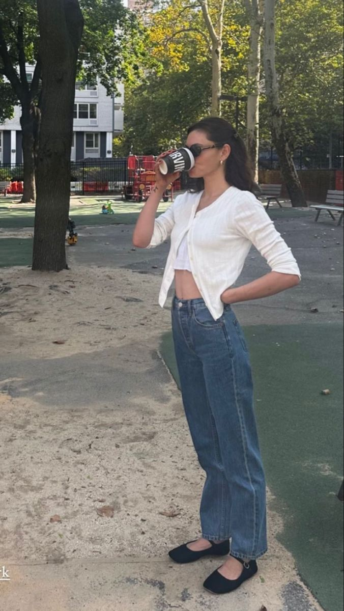
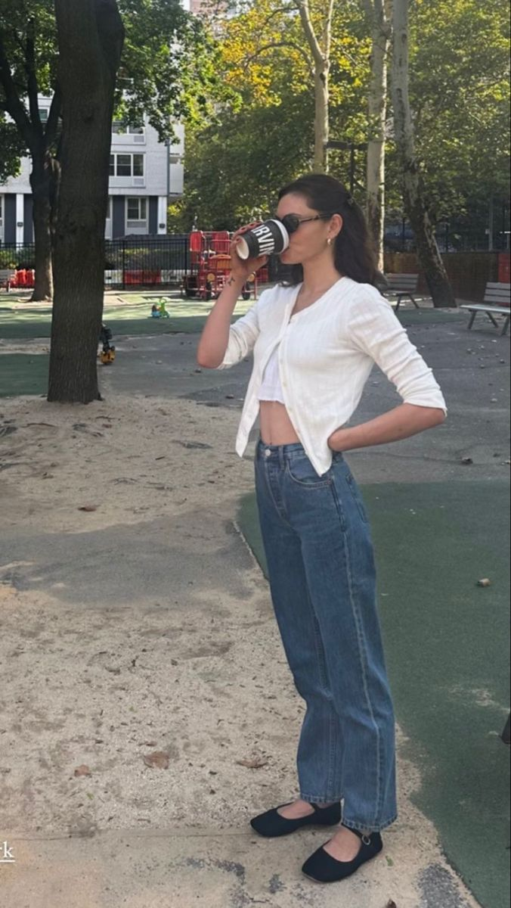
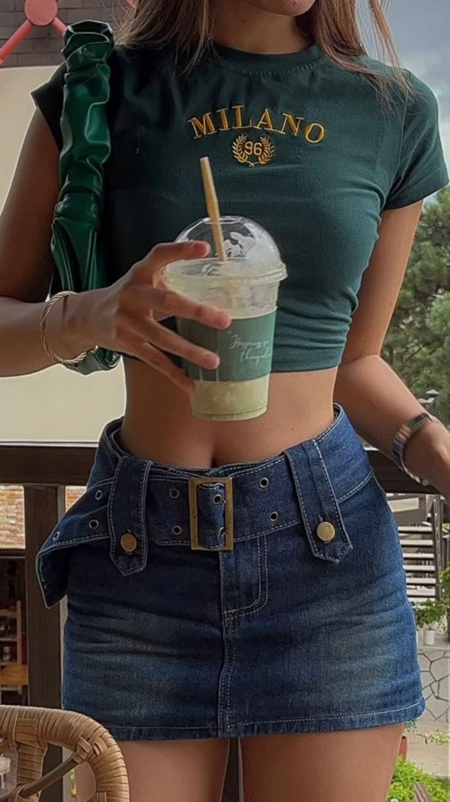
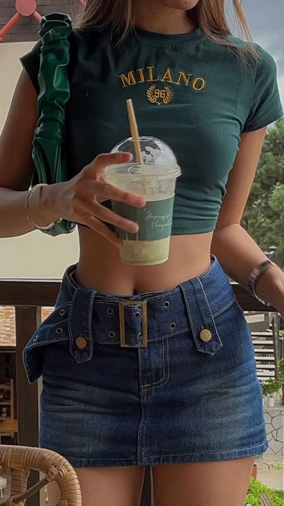

Spring Fashion
There's lots of pieces that I’m obsessed with during the spring season, where it will usually carry on into the summer. I’ve been loving flowy tops with long flowy skirts. It sort of makes me feel like I should be in europe! I’ve been loving Sambas a lot, as another option to converse sneakers. Mini micro skirts are adorable, especially when they’re plaid and pleated. I love an oversized jacket no matter the weather! I’ve also adored the ribbon look in your hair to give a bit of coquette core <3. Ballet flats, with the straps on are my favorite new recent pieces I've gotten. It reminds me of when I was little I always wanted to wear flats but never gound a good pair back then but now I have!! It's basically healing my inner child lmao! I'm wearing them with jeans, a long denim skirt, and a long white skirt.
Fall Fashion
Autumn is one of my favorite seasons for fashion since you get the best of both worlds of wearing layers and short sleaves. It's not too cold outside but not too hot so you can really wear anything and it works! because I get really excited about diving back into layered pieces when the season comes along. Having turlenecks underneath hoodies, leather jackets over tshirts, and shirts peaking out of sweaters (to give off a 90's vibe). One of my favorite things to wear is a leather jacket in the fall with any outfit. An honorable mention would be a sweater with a black mini skirt and knee high heeled boots. I love having a pop of cherry red in the fall, whether it's through my shoes, purse, or scarf.
Summer Fashion
During the hot season, you gotta wear tanks and possibly paired with sambas and long baggy denim shorts. Micro mini pleated skirts are being brought out and along with all of my cottage core dresses. Long patterned silk skirts are also a cool, it gives me 90s vibes. Baby tees are also my favorite thing to wear, both in the spring and the summer, and paired with anything like a mini skirt, shorts, and jeans.
Winter Fashion
I feel like the winter time is generally when you get to showcase your best jacket and scarf combos. I love a good pea coat along with a plaid chunky scarf or a red scarf (to give a pop of color). I've seen many people rock those jackets with fur trims and I'm kinda obssesed with that too, it very much gives 70s vibes. Underneath the jackets you get to wear your favorite sweaters! For shoes obviously a doc marten is a must! It's also interchangable with knee high boots which are covered up by flared jeans, or you can go with the short square toed heeled boots. I've been seeing the knee high sock platform boots everyone, especially on sabrina carpenter, and that is also a must!

 

 
